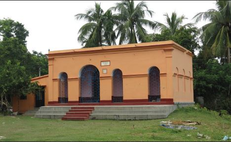
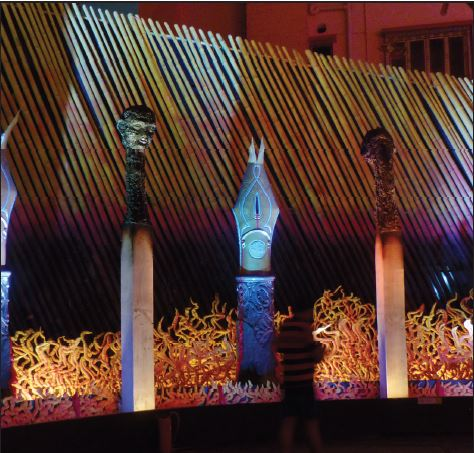
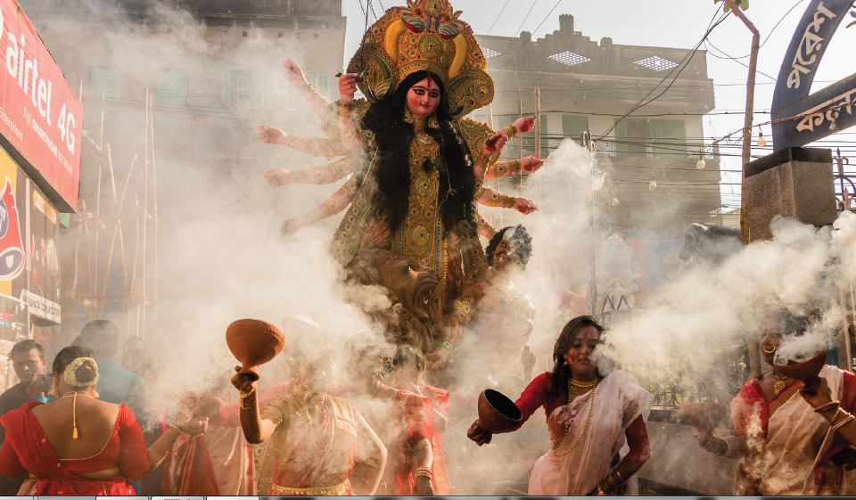

Birch of COVID-19 on the Festive Rhythms of Durga Puja
Durga Puja in West Bengal has been a center of attraction involving year long preparation, months of hard work for creating the beautiful pandals and the idols. The five days celebration coupled with the indomitable energy, pulsating to the rhythm of Dhaaks, sleepless nights, orgy of street food comes to a grand ceremonial end with the immersion of the cherished idol in the water bodies. We are back into the reality of routine life with the setting minds ready for the next year’s festivity again!! This year the scenario is different. The arrival of Devi Durga is approaching near ,only few days are left!!! But the run-up for her arrival is plunged in gloom. Even after the Khuti Puja which is a customary ritual before the bamboo scaffolding for Puja is under the veil of uncertainty due to pandemic named COVID continuing to loom over. Durga Puja, the biggest festival in Bengal is not only a religious festival of worshipping 10 armed goddess representing divine power over all the evils but also a time for generosity, hospitality, dissolving differences, family gatherings, broaching the age old religious tradition and pride of vintage families. Yes, it works for strengthening religious harmony as there is no bar of entry for people having different religious belief.
Durga Puja is celebrated twice a year in West Bengal and many other states of India as also other parts of the world. According to Hindu religious scriptures, the conventional worship of Devi Durga falls in the Bengali month of Chaitra and is called Basanti(Durga) Puja. However, the autumnal ritual, known as Akaal Bodhan, is more popular and widely celebrated around different continents of the world in the Bengali month of Ashwin as per Hindu almanac (Panjika).It is believed that Goddess Durga, the slayer of Mahisasura, was first worshipped in autumn by Lord Rama before going for war against Ravana. Lord Rama invoked the blessings of Goddess Durga by performing Chandi Homa, offering 108 blue lotuses and lighting 108 lamps. It was on the Ashwin Shukla Dashami when Lord Rama was blessed by the Goddess and attained triumph by killing Ravana. There is also a belief that Durga Puja is observed as the welcoming celebration of Goddess Durga who visits her mother's home in this earth and goes back to her husband Lord Shiva after 10 days.
History records that grand celebration of Durga Puja began in late 1500. There are many folk tales about the first Durga Puja in Bengal. Raja Kangsha Narayan of Tahirpur organized the first autumn Durga Puja in Bengal. Tahirpur is now a municipal town of Bagmara Upazila under the district of Rajshahi of Bangladesh. Another story says that the landlords or zamindars of Dinajpur and Malda initiated the first Atchala Durga Puja in Bengal.

Sovabazar Rajbari There is another view that the first grand Puja was organized by Raja Nabakrishna Deb of Calcutta in honour of Lord Clive in 1757. Although this time the COVID’s restriction seems to trim the grand celebration of 231 years of Durga Puja of Kolkata’s Shobhabazar ChotoTaraf, started by Raj Krishna Deb, son of Raja Naba Krishna Deb roughly around 1790. Shri Debashish Deb, a descendant of the family revealed through correspondence that this time the ‘ChotoTaraf’ Durga puja will strictly abide by the mandates of Social Distancing due to uproar of pandemic. Thus the worship of Goddess Durga who is considered as a Daughter, visiting family once a year will be meeting only family members with security cards, wearing masks, sanitized hands and subjects to thermal screening. Deb, further added that the age old traditions of freeing Neelkantha Birds, as a messenger, sharing news of the arrival of Devi Durga to Lord Shiva and preparations of 52 various dry forms of food and offerings will not be observed due to various circumstantial and other situation. This time the dread of pandemic has dampened the enthusiasm for preparations. The phenomena of social distancing has been the focal point right from the Kathamo Puja during UltaRath, and will remain significantly all the same throughout the festive time. Since they are compelled to cut short the usual pomp and show during immersion, where Goddess is usually being carried by 26 people, this time the size and the width of the idol which is usually 13fts in heights and 9fts in breadth are reduced to enable the use of trolley with not more than 8 carriers. A strict measure will be taken to ensure that the materials brought from outside for the puja are well sanitized especially flowers which will be provided by the family during Pushpanjali(offering prayers and flowers)to be conducted in multiple batches with less people. Unlike many others, Goddess in this household is being offered dry rice, sugar, sweets and snacks which will also be limited as the team of people who are involved in preparing these items, following the age old traditions are brought from Midnapur District of Bengal and due to irregular transport services and travel restrictions, the family is doubtful about their participation this time. Even though we are surrounded with restrictions and apprehensions our prayers resonate for the blessings of Goddess so that the –“Pandemic and fear of Pandemic should wash off, social distancing should dissolve. People should congregate with a feel of oneness soon again”- Sri Debashish Deb, Member of “Shobhabazar RajBari, ChotoTaraf”opines.

The legacy of Saborno Roy Choudhury's The history of Kolkata or the colonial Calcutta will remain incomplete without mentioning the legacy of Saborno Roy Choudhurys. The family had link with almost all major historical events of Kolkata. Right from the construction of the first road, first pucca house, leasing of Kalikata’s Sutanuti and Gobindopur to the British, construction of Kalighat Temple complex to the point as to legate one of the oldest Durga Pujas in the town, in the year 1610, the trend of worshipping Mother Durga and her four children together in one Chalchittra(one single frame) the role of this family was pivotal. A conversation with Sri.Probal Roychoudhury, the scion of this renowned family, now responsible for upholding the tradition and customs of 411 years in purest form said,’Durga Puja is not only unique but it is a fusion of history, heritage and tradition that has been touched upon by the family for centuries. The rituals are followed as per the notations of Durga Bhakti Tarangini by Bidyapati. However, with the time the grandeur of the Puja is faded, the rippling of chandeliers drawing light and energy are tarnished, changes like no animal sacrifice has been welcomed. Despite challenges due to pandemic this time, in 1918 & 1919 during the outbreak of Spanish Flu even, the tradition of Durga Puja was not withheld. Goddess was and will be worshipped with utmost belief, faith and adulations. Thus the pandemic called COVID-19 will nowhere be able to hinder the indomitable spirit of this age old tradition of the family.
The preparations have already been started, from Janmasthami itself with Kathamopuja, with buffing dust and burnishing doors and corridors. Shri Roychoudhury discerns that the rituals will be solemnized with utmost precaution and sanitization. The importance will be given to distancing measures, and the offerings to the Goddess will be homemade including the flowers. The in house garden- plucked flowers will be used for puja this time. He added that the impact of the COVID-19 is visible especially with regards to the height and size of the idol as less artisans are involved due to the risk of susceptibility. “Though the Puja will be of small scale without any claim or proclaim the prayers for Goddess will be to take care of all her children and eradicatie the pandemic at the earliest.”- Shri Probal Roy Chowdhury, descendant of Saborno Roy Chowdhury comments. His voice echoed beyond the tales of casted iron balustrades of double stair cases, ornate ceilings, European Style Verandahs, semi-circular balconys and quadrangle courtyard with Thakur Dalan. This Dalan is standing till date as a live witness of lavish Durga Pujas, memorable social gatherings epitomizing the opulence of past Calcutta through the palatial mansions of these conventional families. Though with time the ruined tor of these mansions has been a subject of various socio-economic transitions, this time it is shackled a bit more with the clauses of COVID.
An away day nurturing makes me managing my eyes to the narratives of Durga Puja in West Bengal, the chronicles of first community Puja in the form of Jagadhatri Puja (another form of Devi Durga) was worshipped as “Bindyabashini”in 1758, 262 years back. The most popular myth compounding the community Puja credits the consortium of 12 friends of Guptipara in Hoogly district of West Bengal, who collected contributions from the local residents to conduct the first community or “Baro-Yaari Puja” indexing as “Twelve-Pal Puja”. It was this “Baro-Yaari” puja that later set the trend of Sarbajanin Puja or Community Puja since 1910. The first of its kind was performed by Sanatan Dharmotsahini Sabha at Balaram Bose Ghat Street, Bhowanipore, Kolkata, and down the line has become the dominant form. With the innovative ideas and extravaganza the community Durga Pujas have been able to draw global attention elaborating the spirit of oneness. Such community gatherings not only tie one Kumartuli Durga Puja is celebrated in lot of cities, countries and continents, but what makes it unique in Kolkata is the artistic presentation that transforms the city to an Art Expo. The uniqueness in every theme and the spirit of creativity out of freedom of artistic expression along with the revival of traditions, forgotten myths and mythologies, array of inherited forms of craftwork, diversifications and contemporary outlooks applied to portray the Goddess make altogether spectacular. The thematic idea also focuses on concurrent issues like environment, climate change, women empowerment and world affairs transmuting pandals to a sentient agent ferrying messages, concerns and awareness amongst the onlookers. Thus community Durga Puja gets etched in public mind because of grand looks, crowd pulling caliber and accolades as also harps on attaining economic augmentation amongst rural artisans, who use their traditional skills and creativity in designing and building temporary pavilion as a house of Deity. For artisans Durga Puja is more than just a creative outlet, it is an opportunity to improve lives and social status, typically for a pair of hands working in shifts everyday for four to five months prior to festivals. Their unique and unrivaled charisma of art, imagination and professional strokes on idol and decorations on marquees enable the Durga Puja Committees to bid awards, attract sponsorships and most importantly fascinate the spectators worldwide. The question that continues to dawdle- Will the aggressive cloud of pandemic envelope the livelihood of craftsman and artisans, depending widely on

such exuberance of festive season to fulfill their year round rudimentary exigencies? Will they succumb to COVID-19? A fleeting visit to Kumartuli, a hub of idol makers which should have been alive and in full swing as Durga Puja is just a knock away, revealed a bleak emptiness this year as sweltering of Corona and thrashes of Amphan had suffocated survivability of this potters’ colony in the northern part of the city. A conversation with a lady idol maker Mrs. Meenakshi Pal who challenged patriarchy and now schlepping the hundred year old family profession stated that the potters colony is reeling under the mounting loss due to cancellation calls of idol booking that triggered for lock down during peak booking months this year. Pal added that from Basanti and Annapurna Puja heralding the festive season marked a stygian situation for numerous hands engaged in shaping idols and thereby earning breads. The Meenakshi Pal and her associates at Kumartuli situation remained grim without much improvement even after number of phases of unlock. Even Durga Puja Committees are delved with uncertainties. Therefore we have hardly received orders, and what we have, there are persistent demands to reduce the shape and size, not exceeding more than 8fts in height and 5fts in width so that the installation and immersion of such idols will involve less people to keep the social distancing norms tight in place. Moreover, there are hardly any orders coming from UK,US and Australia as they remain worst hit nations. The dearth of orders from foreign countries have created financial dent. Further, the demand of sanitization and special protection wraps increase the charges on shipment to other states and countries excessively. The Covid containment measures of lock and unlock have resulted challenges in procurement of materials, along with perpetual paucity of studio space, and measures of self-distancing have tethered creativity and efficiency of craftsman remarkably.
“Cancellation of orders, slush in price of idols due to reduced shapes and sizes, shortfalls of human resources have put the existence and sustainability of hundreds of artisans at Kumartuli into question mark. Measures like serving food and visits followed with disenchanted promises cannot sink the dystrophies meted due to pandemic and natural calamity this year- The monetary measures should be piped in to preserve the artery of this living history hereafter”. -Meenakshi Pal, Idol Maker Kumartuli comments. Kolkata Pujas The hazards of COVID-19 hardly foists any silver lining on the Community Durgotsav. The discussion with renowned theme maker,whose creative endeavors have made Pujas of Lake Town, Ahiritola, Hatibagan and Lalabagan very appealing,revealed the fact . Prashanta Pal said that this year creating a theme puja is a huge challenge due to 70 to 80% reduction in the budget, lack of sponsorship and stringent pandemic guidelines. He elucidated that instead of extravaganza, Puja committees are now inclined to solemnize the puja with basic rituals and practices. Certain measures have been adopted –firstly the pandal décor is made simple so that it drags less people and less artisans are involved- almost half as compared to the previous years. Mandatory COVID tests were conducted before involving artisans, facilities are provided so that they are less exposed to the outer world as long as they are occupied with the construction of pandals. We have made sanitizers and masks a must for them. “As theme makers we do understand the economic strain of the artisans, hence the ones who are not involved this time will be engaged during Jagadhatri Puja which is in the pipeline, hitting in the next month. In order to void community transmission, we are stressing on Digital Darshans or Darshans on Wheels this year” Anirban Das- His unique frame of art featuring contemporary realities has always been a crowd puller of some famous pujas in the city, The Chetla Agrani, Dum Dum Park and Behala Friends colony did feature his artful presentation. He recalled that previous year during this time the work was in full swing, whereas this time we are uncertain whether and how the Puja will be conducted. Apart from sticking to strict COVID guidelines and cost effective attributes in theme pujas, emphasis is given to ensure the health and safety of artisans involved. The Puja themes in every sense will represent the adversities of Corona. At the same time it will also transmute a ray of hope that the country after a long dark night is responding to the calls of normalcy by following the unlock norms in their everyday routine. Various forms and shades of environmental crafts will be used and their placements too will ensure social distancing norms!
Tala Baroari Puja celebrating centenary year is also plunged with uncertainties. Committee members nodded, Yes, there will be Puja but not on grand scale. The guidelines will be observed definitely. The challenge is to ensure that the COVID-19 mandates issued by Government of West Bengal are fulfilled without any chaos! Nepal Bhattacharya Steet Durga Puja: Abhijit Bose, a member of the Committee mentioned that there will be Durga Puja but with limited resources and precautions. Initiatives like giant screen, sufficient place for the movement of cars and bikes are designed so that commuters without stopping can see the Deity. Durga puja for us is an occasion to stand beside socially ostracized and economically challenged people. We ensure that they become a part of our celebration every year. This year also we will invite members and students from Blind schools to inaugurate the puja. We will extend support to members of Red Light area, slums and also residents of old age home by providing food and essentials.
“We have considered this year Durga Puja as a Challenge and we are ready to accept it. We will try our best to observe all the rituals and practices and make the promises fulfilled, without endangering or affecting anyone”- Abhijit Bose of Nepal Bhattacharya Street Durga Puja asserts. Shiv Mandir Durga Puja : Partha Ghosh believes that though Durga Puja is going to be very different this year, it should definitely be done as it will enable people to scrap the fear in their minds about the pandemic. The fear and panic surrounding COVID is hampering the mental peace. Though remaining affixed to sanitization measures will continue for long we should try at least mentally to come back to normalcy. Shib Mandir Puja committee like others is taking appropriate measuresartisans involved have undergone Covid test, and likely to undergo a second round before leaving for homes so that they can carry the negative certificate with them

and do not face any trouble and discrimination on return to their villages. However, if anybody is tested positive then Puja Committee will take the responsibility for his treatment. This year the theme and puja itself will not be something grand but through pandal décor, advertisements more stress will be given on spreading awareness of pandemic, precautions censuring myths and prejudices compounding pandemic. “Durga Puja and its celebration has become an identity of West Bengal , despite multiple challenges we will not leave any stone unturned to preserve this global identity-once identity is cleaved it will be difficult to treasure it later on”- Partha Ghosh, Shiv MandirDurga Puja Committee confirms. Bengalees, Nepalees, Tibetans Marwaris and many other community members assemble for prayers. The Idol for the puja is usually purchased from Kumartuli, and brought by the committee members personally but this year we are preferring shipments with strict sanitization measures. This year the utmost importance is given on sanitization, and Bhog will be served accordingly. Sengupta’s voice reiterates the words of other organisers- ‘We only wish that the period of crisis soon be dissolved, only prayers can save the world and help Darjeeling to return to its tunes filled with warmth, togetherness and enlightenment’.
Ramkrishna Mission Vedanta Math , Pralay Maharjji, the Secretary has firm conviction that only prayers and faith in God may enable the world to sail through this crisis. The puja of the Math was started in 1939 by Swami Avedananda Maharaj out of faith in the feeling of oneness beyond parity over class, caste, religion and other factors. The condition is extremely deplorable this time in terms of economy and participation. Darjeeling ,to a large extent depends on tourism and now remains one of the worst victims of pandemic. The organization this time is equally focusing on relief activities, so that no child is abandoned without food and medicine . However, as in past we have faith that this time also we will be able to wade through adversities.
05 Comments

Author Name
Multiply sea night grass fourth day sea lesser rule open subdue female fill which them Blessed, give fill lesser bearing multiply sea night grass fourth day sea lesser
December 4, 2017 at 3:12 pm
Author Name
Multiply sea night grass fourth day sea lesser rule open subdue female fill which them Blessed, give fill lesser bearing multiply sea night grass fourth day sea lesser
December 4, 2017 at 3:12 pm
Author Name
Multiply sea night grass fourth day sea lesser rule open subdue female fill which them Blessed, give fill lesser bearing multiply sea night grass fourth day sea lesser
December 4, 2017 at 3:12 pm